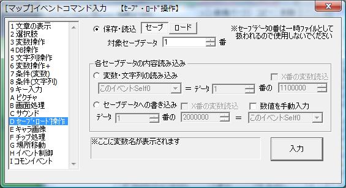

イベントコマンド 【セーブ・ロード操作】
データのセーブやロードに関する処理を行います。 セーブデータの一部だけ操作することも可能です。

【基本的な説明】
・並列実行されるイベント中でセーブやロードを行うと、強制終了する可能性がありますので、並列実行イベント中では使用しないでください。
・「内容読み込み」ではイベントのセルフ変数を読み込むことはできません。
【各機能の説明】
[保存・読込（セーブ/ロード）]
セーブデータを書き込んだり、読み込んだりするコマンドです。セーブデータのファイル名は、たとえばセーブデータ番号1番の場合は、
「Save/SaveData01.sav」
として保存されます。セーブデータ番号には変数（例：2000000[通常変数0番]など）を指定することができます。
なお読み込むセーブデータが存在しない場合は、そのまま次のイベントコマンドを実行します。セーブデータが存在する場合は、イベントを即中断してセーブされた状態からゲームを再開します。
[変数・文字列の読み込み]
指定したセーブデータから変数・文字列を読み込み、現在プレイしているゲームの変数へ代入します。なお、読み込むセーブデータが存在しない場合、変数なら0の値、文字列なら空白文字列が代入されます。
余談ですが、システム変数24番（9000024：[読]ｾｰﾌﾞﾃﾞｰﾀ読込判定）はそのセーブデータが存在する場合は必ず「1」を返す変数です、このコマンドでまずこのシステム変数を読み込めば、セーブデータの有無を確認することができます。
[セーブデータへの書き込み]
指定したセーブデータに変数・文字列だけ書き込みます。
※もしセーブファイルが存在しない場合は、新たにセーブファイルを作成します。ただしその場合、保存先には可変DBのタイプ情報、データは一切書き込まれませんのでご注意下さい。マニアックな部分ですが引っかかりポイントです。
→ もし可変DBの内容もセーブファイルに入れたい場合は最初に通常の「保存・読込」→「セーブ」を行ってください。
【使用例】
・「保存・読込」機能はセーブが必要なゲームでは必須です。
・「変数・文字列の読み込み」や「セーブデータへの書き込み」は、各々のセーブデータだけでは保存しきれない情報を別のファイルに保存するのに使えます。一例としては、「ゲーム全体のクリア回数を保存する」といった役割のデータを作成する際に便利です。
【特殊機能 保存ファイル名を文字列変数で指定】
各データ番号欄に文字列変数（3000000〜）を指定すると、その文字列のデータ名でセーブデータが保存されます。たとえば文字列変数0番に「システム情報.sav」と代入してセーブデータ番号に3000000を入力して「セーブ」すると、Game.exeと同じフォルダに「システム情報.sav」というファイルが保存されるようになります。
「Save/システム.sav」なら「Save」フォルダの中に作られます。
※セキュリティ上の安全とWindowsのファイル仕様のため、保存先文字列に「//」「\\」「..」「./」「.\」「%」「:」「*」「?」「"」「<」「>」「|」が含まれているとファイル書き込みできません、ご注意ください(Ver3.00以降)。
【重要な点】
たとえイベントの途中でセーブしていた場合でも、セーブデータをロードした直後は「イベントが実行されていない状態」から再開されます。
つまり、ロード後に実行中だったイベントコマンドが途中から再開されたりはしませんので、注意してください。
変数操作の順番などを間違えると、「ボス戦イベント中にセーブしたデータをロードすると、イベントが終了した扱いになってて続きが何も起きない」といった失敗が起こったりします。